<!-- TODO add slide numbers & maybe slide name --> ### Hands on Graph Machine Learning  Eric W. Bridgeford and Jaewon Chung<br> For questions, reach out to [ericwb95@gmail.com](mailto:ericwb95 at gmail dot com) or [j1c@jhu.edu](mailto:j1c at jhu dot edu) Follow the slides: [ericwb.me/lectures/intro_graph_ML.html](ericwb.me/lectures/intro_graph_ML.html) --- name:talk ### Outline - [Basics of Graph Data](#graphs) - [Random Graph Models](#models) - [Estimating Parameters for Networks](#est) - [Applications](#apps) ### [Additional Content](#extra) --- name:whyhave ### Outline - Basics of Graph Data - Why do we use statistics? - [What is a network?](#graphs) - [What different types of networks are there?](#types) - [Random Graph Models](#models) - [Estimating Parameters for Networks](#est) - [Applications](#apps) ### [Additional Content](#extra) --- ### What is the traditional framework for learning in science? - Most data tends to be in a ubiquitous format: $n$ observations with $d$ features/dimensions - We have lots of algorithms that allow us to learn from this data across different languages - $\texttt{sklearn}$ in $\texttt{python}$, $\texttt{keras}$ in $\texttt{R}$, etc. <br> <br> <br> | Person | Biological Sex | Height | Age | | --- | --- | --- | --- | | Person $1$ | Male | $5'9"$ | $28$ | | Person $2$ | Female | $5'5"$ | $24$ | | ... | ... | ... | ... | --- ### What is the traditional framework for learning in science? - Most data tends to be in a ubiquitous format: $n$ observations with $d$ features/dimensions - We have lots of algorithms that allow us to learn from this data across different languages - $\texttt{sklearn}$ in $\texttt{python}$, $\texttt{keras}$ in $\texttt{R}$, etc. - Devise techniques that allow us to calculate useful quantities about each .ye[observation] | Person | Biological Sex | Height | Age | | --- | --- | --- | --- | | Person $1$ | Male | $5'9"$ | $28$ | | Person $2$ | Female | $5'5"$ | $24$ | | ... | ... | ... | ... | --- ### Coin flip example - Coin flip experiment: have a coin with probability of landing on heads of $p$ - .ye[Question]: If I flip the coin $15$ times and it lands on heads $6$, can you estimate the probability of landing on heads? - Anybody? Why is it what it is? --- ### Coin flip example - Coin flip experiment: have a coin with probability of landing on heads of $p$ - Question: If I flip the coin $15$ times and it lands on heads $6$, can you estimate the probability of landing on heads? - .ye[Intuitive answer]: $\frac{6}{15}$ --- ### Coin flip example - Coin flip experiment: have a coin with probability of landing on heads of $p$ - Question: If I flip the coin $15$ times and it lands on heads $6$, can you estimate the probability of landing on heads? ##### Rigorous answer $\mathbf{x}_i \sim \text{Bern}(p)$ $i.i.d$ heads (value $1$) and tails (value $0$) --- ### Coin flip example - Coin flip experiment: have a coin with probability of landing on heads of $p$ - Question: If I flip the coin $15$ times and it lands on heads $6$, can you estimate the probability of landing on heads? ##### Rigorous answer $\mathbf{x}_i \sim \text{Bern}(p)$ $i.i.d$ heads (value $1$) and tails (value $0$) $\mathcal L (x\_1, ..., x\_{15}) = \prod\_{i = 1}^{15} p^{x\_i}(1 - p)^{x\_i}$ --- ### Coin flip example - Coin flip experiment: have a coin with probability of landing on heads of $p$ - Question: If I flip the coin $15$ times and it lands on heads $6$, can you estimate the probability of landing on heads? ##### Rigorous answer $\mathbf{x}_i \sim \text{Bern}(p)$ $i.i.d$ heads (value $1$) and tails (value $0$) $\mathcal L (x\_1, ..., x\_{15}) = \prod\_{i = 1}^{15} p^{x\_i}(1 - p)^{x\_i}$ take derivative of $\\ell = \\log(\\mathcal L)$ and set equal to zero $\Rightarrow \hat p = \frac{\sum\_{i = 1}^{15}x\_i}{15}$ is the MLE --- ### Coin flip example - Coin flip experiment: have a coin with probability of landing on heads of $p$ - Question: If I flip the coin $15$ times and it lands on heads $6$, can you estimate the probability of landing on heads? ##### Rigorous answer $\mathbf{x}_i \sim \text{Bern}(p)$ $i.i.d$ heads (value $1$) and tails (value $0$) $\mathcal L (x\_1, ..., x\_{15}) = \prod\_{i = 1}^{15} p^{x\_i}(1 - p)^{x\_i}$ take derivative of $\\ell = \\log(\\mathcal L)$ and set equal to zero $\Rightarrow \hat p = \frac{\sum\_{i = 1}^{15}x\_i}{15}$ is the MLE check that we found a maximum (second derivative, check extrema) --- ### Coin flip example - Coin flip experiment: have a coin with probability of landing on heads of $p$ - Question: If I flip the coin $15$ times and it lands on heads $6$, can you estimate the probability of landing on heads? - Intuitive and rigorous answers align - Statistics allows us to be rigorous about things we find intuitive --- ### Coin flip example - Coin flip experiment: have a coin with probability of landing on heads of $p$ - Question: If I flip the coin $15$ times and it lands on heads $6$, can you estimate the probability of landing on heads? - Intuitive and rigorous answers align - Statistics allows us to be rigorous about things we find intuitive - Statistics can also allow us to be rigorous about things that are more complicated or unintuitive --- name:graphs ### Outline - Basics of Graph Data - [Why do we have special approaches for networks?](#whyhave) - What is a network? - [What different types of networks are there?](#types) - [Random Graph Models](#models) - [Estimating Parameters for Networks](#est) - [Applications](#apps) ### [Additional Content](#extra) --- ### What is a network? - Network/Graph $G = (\mathcal V, \mathcal E)$ - $\mathcal V$ are vertices/nodes - $\mathcal E$ are edges: connect one vertex/node to another <center></center> --- ### Layout plots - Provide a visualization of the nodes and edges in the network in some arbitrary space <center></center> --- ### Adjacency matrices - $A$ is an $n \\times n$ .ye[adjacency matrix] for a network with $n$ nodes $$\\begin{aligned} a\_{ij} = \\begin{cases}1, & e\_{ij} \in \mathcal E \\\\ 0, & e\_{ij} \not\in \mathcal E\end{cases} \\end{aligned}$$ - The .ye[incident nodes] of an adjacency $a\_{ij}$ are $i$ and $j$ <center></center> --- ### Paths describe .ye[edges of travel] from one node to the next - Path from $i$ to $j$: sequence of edges $e\_{i'j'}$ from node $i$ and ending at node $j$ - What's a path from Staten Island (SI) to Bronx (BX)? <center></center> --- ### Two paths from SI to BX <center></center> --- name:types ### Outline - Basics of Graph Data - [Why do we have special approaches for networks?](#whyhave) - [What is a network?](#graphs) - What different types of networks are there? - [Random Graph Models](#models) - [Estimating Parameters for Networks](#est) - [Applications](#apps) ### [Additional Content](#extra) --- ### Directed networks - Edges aren't necessarily "symmetric" - The lanes of the Brooklyn bridge are out from BK to MH - There is an edge from MH to BK, but there is no edge from BK to MH - .ye[asymmetric] adjacency matrix <center></center> --- ### Networks with self-loops - .ye[self-loops] allow nodes to connect back to themselves - A bridge from a point in SI to another point within SI (crossing a creek?) - .ye[non-hollow] adjacency matrix <center></center> --- ### Networks with weights - For every edge, a .ye[weight] $w\_{ij}$ indices information about the "strength" of the edge - What is the level of traffic congestion for each bridge? - .ye[non-binary] adjacency matrix <center></center> --- ### Simple networks - undirected, unweighted, loopless - symmetric, binary, hollow adjacency matrix --- name:degree ### Degrees - node degree $degree(i)$: the number of nodes that $i$ has edges to - Degree of SI: 1 <center></center> --- ### Calculating node degrees $$d\_i = degree(i) = \\sum\_{j = 1}^n a\_{ij}$$ - Sum the adjacency matrix column-wise - since the network is simple (loopless), $a\_{ii} = 0$ - For simple networks, we can write $d\_i = \\sum\_{j \neq i}a\_{ij}$ <center></center> --- ### Degree matrix - The .ye[degree matrix] $D$ is the matrix with node degrees on the diagonal, and $0$ otherwise: $$D = \\begin{bmatrix}d\_1 & 0 & \\cdots & 0 \\\\ 0 & \\ddots & \\ddots & \\vdots \\\\ \\vdots & \\ddots & \\ddots & 0 \\\\ 0 & \\cdots & 0 & d\_n\\end{bmatrix}$$ --- ### Degree matrix - The .ye[degree matrix] $D$ is the matrix with node degrees on the diagonal, and $0$ otherwise: $$\\begin{aligned}D &= \\begin{bmatrix}d\_1 & 0 & \\cdots & 0 \\\\ 0 & \\ddots & \\ddots & \\vdots \\\\ \\vdots & \\ddots & \\ddots & 0 \\\\ 0 & \\cdots & 0 & d\_n\\end{bmatrix} \\\\ &= \\begin{bmatrix}d\_1 & & \\\\ & \\ddots & \\\\ & & d\_n \\end{bmatrix}\\end{aligned}$$ --- ### Degree matrix - For the New York example, it looks like this: <center></center> --- ### Network laplacian - as long as all $d\_i > 0$, we can take the reciprocal of the degree matrix $$D^{-1} = \\begin{bmatrix}\\frac{1}{d\_1} & & \\\\ & \\ddots & \\\\ & & \\frac{1}{d\_n}\\end{bmatrix}$$ -- - we can also take the square root: $$D^{-\\frac{1}{2}} = \\begin{bmatrix}\\frac{1}{\\sqrt{d\_1}} & & \\\\ & \\ddots & \\\\ & & \\frac{1}{\\sqrt{d\_n}}\\end{bmatrix}$$ --- name:net_lapl ### Network laplacian - The .ye[network Laplacian] is defined as: $$L = D^{-\\frac{1}{2}}A D^{-\\frac{1}{2}}$$ -- $$\\begin{aligned}L &= \\begin{bmatrix} \\frac{1}{\\sqrt{d\_1}} & & \\\\ & \\ddots & \\\\ & & \\frac{1}{\\sqrt{d\_n}}\\end{bmatrix} \\begin{bmatrix}a\_{11} & \\cdots & a\_{1n} \\\\ \\vdots & \\ddots & \\vdots \\\\ a\_{n1} & \\cdots & a\_{nn}\\end{bmatrix} \\begin{bmatrix}\\frac{1}{\\sqrt{d\_1}} & & \\\\ & \\ddots & \\\\ & & \\frac{1}{\\sqrt{d\_n}}\\end{bmatrix} \\\\ &= \\begin{bmatrix} \\frac{a\_{11}}{d\_1} & \\cdots & \\frac{a\_{1n}}{\\sqrt{d\_1}\\sqrt{d\_n}} \\\\ \\vdots & \\ddots & \\vdots \\\\ \\frac{a\_{11}}{\\sqrt{d\_n}\\sqrt{d\_1}} & \\cdots & \\frac{a\_{nn}}{d\_n}\\end{bmatrix}\\end{aligned}$$ --- name:net_lapl ### Network laplacian - The .ye[network Laplacian] is defined as: $$L = D^{-\\frac{1}{2}}A D^{-\\frac{1}{2}}$$ - the entries $l\_{ij} = \\frac{a\_{ij}}{\\sqrt{d\_i} \\sqrt{d\_j}}$ -- - similar to the adjacency matrix, but "normalized" by the degrees of incident nodes for every edge --- ### Diffusion connectome - neuron: functional "unit" of the brain - axon: "projection" from the center (cell body) of the neuron -- - synapse: junction of the brain that bridges two neurons - the neurons can "communicate" through the synapses <center></center> --- ### Diffusion connectome - cannot see synapses and neurons without microscopy - microscopy requires sections of the brain (illegal) -- - the brain is highly optimized - the axons tend to be "bundled together" in "fiber tracts" - we can see these with MRI <center></center> --- ### Diffusion connectome - brain area: collection of neurons with similar function - measure which brain areas are connected with other brain areas - idea: if there is an axonal fiber tract, neurons from these brain areas can communicate <center></center> --- ### Diffusion connectome - nodes: brain areas - edges: does an axonal fiber tract link from one brain area to the other? <center></center> --- ### Attributes for network data - .ye[attributes] describe characteristics of the nodes or edges in the network - Diffusion connectome: left and right hemisphere <center></center> --- name:models ### Outline - [Basics of Graph Data](#graphs) - Random Graph Models - Why do we use Random Graph Models? - [Inhomogeneous Erdös Rényi Random Graphs](#ier) - [Erdös Rényi Random Graphs](#er) - [Stochastic Block Models](#sbm) - [RDPGs](#rdpg) - [Properties of Random Networks](#props) - [Degree-Corrected Stochastic Block Models](#dcsbm) - [Positive Semi-Definiteness](#psd) - [Estimating Parameters for Networks](#est) - [Applications](#apps) ### [Additional Content](#extra) --- ### Back to coin flips - Let's imagine a game of flipping a coin - You win if it lands on heads less than $5$ times, and if it lands on heads more than $5$ times, your friend wins --- ### Back to coin flips - Let's imagine a game of flipping a coin - You win if it lands on heads less than $5$ times, and if it lands on heads more than $5$ times, your friend wins - Outcome: $9$ heads - Was it rigged? Is the coin biased? --- ### Making the coin flip experiment more formal - Model: $\mathbf x\_i \sim \\text{Bern}(p)$ $i.i.d.$ - Question: is $p > 0.5$? - With $H\_0 : p = 0.5$ and $H\_A : p > 0.5$, do we have evidence to reject $H\_0$? --- ### Making the coin flip experiment more formal - With $H\_0 : p = 0.5$ and $H\_A : p > 0.5$, do we have evidence to reject $H\_0$? - Null: $\\sum\_{i = 1}^{10} \\mathbf x\_i \sim \\text{Binomial}(10, 0.5)$ - $p$-value: $p = \\sum_{k = 9}^{10} \\binom{10}{k}p^{k}(1 - p)^{10 - k}$ --- ### Making the coin flip experiment more formal - With $H\_0 : p = 0.5$ and $H\_A : p > 0.5$, do we have evidence to reject $H\_0$? - Null: $\\sum\_{i = 1}^{10} \\mathbf x\_i \sim \\text{Binomial}(10, 0.5)$ - $p$-value: $p = \\sum_{k = 9}^{10} \\binom{10}{k}p^{k}(1 - p)^{10 - k}$ - .ye[What did the model let us do?] --- ### Making the coin flip experiment more formal - With $H\_0 : p = 0.5$ and $H\_A : p > 0.5$, do we have evidence to reject $H\_0$? - Null: $\\sum\_{i = 1}^{10} \\mathbf x\_i \sim \\text{Binomial}(10, 0.5)$ - $p$-value: $p = \\sum_{k = 9}^{10} \\binom{10}{k}p^{k}(1 - p)^{10 - k}$ - .ye[What did the model let us do?] - Get really specific and precise about this tangible concept ($9$ heads in $10$ flips seems like an awful lot) --- ### Why do we use random graph models? - Networks are fundamentally different from $n$ observation, $d$ feature framework - Collection of nodes and edges, not observations with features --- ### Why do we use random graph models? - Networks are fundamentally different from $n$ observation, $d$ feature framework - Collection of nodes and edges, not observations with features - .ye[All of the machinery built for tabular data will not natively work with a network] --- ### Approach 1: nodes are observations, edges are features - .ye[Features] in traditional machine learning describe each observation - isolate information about a particular observation | Person | Biological Sex | Height | Age | | --- | --- | --- | --- | | Person $1$ | Male | $5'9"$ | $28$ | | Person $2$ | Female | $5'5"$ | $24$ | | ... | ... | ... | ... | --- ### Approach 1: nodes are observations, edges are features - .ye[Features] in traditional machine learning describe each observation - Edges define .ye[relationships amongst the nodes] - the edges do not inherently isolate information about each node, so they aren't features for observations <center></center> --- ### ~~Approach 1: nodes are observations, edges are features~~ - .ye[Features] in traditional machine learning describe each observation - Edges define .ye[relationships amongst the nodes] - the edges do not inherently isolate information about each node, so they aren't features for observations <center></center> --- ### Approach 2: treat all possible adjacency matrices like a coin flip - $\mathbf{x}\_i \sim \text{Bern}(p)$ - Affix a probability ($p$) to an outcome of $1$, and $1 - p$ to an outcome of $0$ - There are a finite number of entries in an adjacency matrix, taking finitely many values - There are a finite number of adjacency matrices for $n$ node networks --- ### Approach 2: treat all possible adjacency matrices like a coin flip - $\mathbf{x}\_i \sim \text{Bern}(p)$ - Affix a probability ($p$) to an outcome of $1$, and $1 - p$ to an outcome of $0$ - There are a finite number of entries in an adjacency matrix, taking finitely many values - There are a finite number of adjacency matrices for $n$ node networks - What if we just affix a probability to each possible network? --- ### Number of possible $2$ node adjacency matrices $$\\begin{aligned} \\begin{bmatrix} 0 & 1 \\\\ 1 & 0\\end{bmatrix} \\text{ or } \\begin{bmatrix} 0 & 0 \\\\ 0 & 0\\end{bmatrix}\\end{aligned}$$ --- ### Number of possible $3$ node adjacency matrices $$\\begin{aligned} \\begin{bmatrix} 0 & 1 & 1\\\\ 1 & 0 & 1 \\\\ 1 & 1 & 0\\end{bmatrix} \\text{ or } \\begin{bmatrix} 0 & 1 & 0\\\\ 1 & 0 & 1 \\\\ 0 & 1 & 0\\end{bmatrix} \\text{ or }\\begin{bmatrix} 0 & 0 & 1\\\\0 & 0 & 1 \\\\ 1 & 1 & 0\\end{bmatrix} \\text{ or }\\end{aligned}$$ $$\\begin{aligned} \\begin{bmatrix} 0 & 1 & 1\\\\ 1 & 0 & 0 \\\\ 1 & 0 & 0\\end{bmatrix} \\text{ or } \\begin{bmatrix} 0 & 0 & 1\\\\ 0 & 0 & 0 \\\\ 1 & 0 & 0\\end{bmatrix} \\text{ or }\\begin{bmatrix} 0 & 0 & 0\\\\0 & 0 & 1 \\\\ 0 & 1 & 0\\end{bmatrix} \\text{ or }\\end{aligned}$$ $$\\begin{aligned} \\begin{bmatrix} 0 & 1 & 0\\\\ 1 & 0 & 0 \\\\ 0 & 0 & 0\\end{bmatrix} \\text{ or } \\begin{bmatrix} 0 & 0 & 0\\\\ 0 & 0 & 0 \\\\ 0 & 0 & 0\\end{bmatrix}.\\end{aligned}$$ --- ### ~~Approach 2: treat all possible adjacency matrices like a coin flip~~ - Number of possible adjacency matrices with $n$ nodes? - $2^{\binom{n}{2}}$ - When $n = 50$, this is well over the number of atoms in the universe - Good luck keeping track of all of that! --- name:ier ### Outline - [Basics of Graph Data](#graphs) - Random Graph Models - [Why do we use Random Graph Models?](#models) - Inhomogeneous Erdös Rényi Random Graphs - [Erdös Rényi Random Graphs](#er) - [Stochastic Block Models](#sbm) - [RDPGs](#rdpg) - [Properties of Random Networks](#props) - [Degree-Corrected Stochastic Block Models](#dcsbm) - [Positive Semi-Definiteness](#psd) - [Estimating Parameters for Networks](#est) - [Applications](#apps) ### [Additional Content](#extra) --- ### Approach 2.5: Treat nodes like coin flips ##### Coin flip experiment - Outcomes: $x$ is heads ($1$) or tails ($0$) - Each flip $\\mathbf x\_i \sim \text{Bern}(p)$ $i.i.d.$ - $p$ gives the probability of heads ($1$) and $1-p$ gives the probability of tails ($0$) --- ### Approach 2.5: Treat nodes like coin flips ##### Coin flip experiment - Outcomes: $x$ is heads ($1$) or tails ($0$) - Each flip $\\mathbf x\_i \sim \text{Bern}(p)$ $i.i.d.$ - $p$ gives the probability of heads ($1$) and $1-p$ gives the probability of tails ($0$) ##### Network experiment - Outcomes: Adjacency matrices $A$, where each entry $a_{ij}$ is $0$ or $1$ - $\\mathbf{a}\_{ij} \\sim \\text{Bern}(p\_{ij})$ independently - $p\_{ij}$ gives the probability of edge ($a\_{ij} = 1$) and $1 - p\_{ij}$ gives the probability of no edge ($a\_{ij} = 0$) --- ### Independent Erdös Rényi Model - $\\mathbf{A} \\sim IER\_n(P)$ - $P$ is an $n \\times n$ probability matrix - For each $\\mathbf{a}\_{ij} \\sim \\text{Bern}(p\_{ij})$ independently - Equipped with the usual properties: $\\mathbb{E}[\\mathbf{a}\_{ij}] = p\_{ij}$, variance, etc. - $\\mathbb{E}[\\mathbf{A}] = P$ --- ### Advantages of the Independent Erdös Rényi Model - Can get a very precise description: any network structure is admissable <center></center> --- ### Disadvantages of the Independent Erdös Rényi Model - Let's say we have a network, how do we learn about $P$ if we assume the network is $IER_n(P)$? --- ### Disadvantages of the Independent Erdös Rényi Model - Let's say we have a network, how do we learn about $P$ if we assume the network is $IER_n(P)$? - An observed network $A$ has a single observation $a\_{ij}$ of each $\\textbf{a}\_{ij}$ - Learning about $p\_{ij}$ would be based on a single zero or one (only one entry for a single adjacency matrix) --- name:er ### Outline - [Basics of Graph Data](#graphs) - Random Graph Models - [Why do we use Random Graph Models?](#models) - [Inhomogeneous Erdös Rényi Random Graphs](#ier) - Erdös Rényi Random Graphs - [Stochastic Block Models](#sbm) - [RDPGs](#rdpg) - [Properties of Random Networks](#props) - [Degree-Corrected Stochastic Block Models](#dcsbm) - [Positive Semi-Definiteness](#psd) - [Estimating Parameters for Networks](#est) - [Applications](#apps) ### [Additional Content](#extra) --- ### Erdös Rényi Random Network Model - What if we assume every $p\_{ij} = p$? --- ### Erdös Rényi Random Network Model - What if we assume every $p\_{ij} = p$? - $\\mathbf A \\sim ER\_n(p)$ means that for every $\\mathbf a\_{ij} \\sim \text{Bern}(p)$ $i.i.d.$ - No structure at all: every node (regardless of any attributes about it) has probability $p$ --- name:sbm ### Outline - [Basics of Graph Data](#graphs) - Random Graph Models - [Why do we use Random Graph Models?](#models) - [Inhomogeneous Erdös Rényi Random Graphs](#ier) - [Erdös Rényi Random Graphs](#er) - Stochastic Block Models - [RDPGs](#rdpg) - [Properties of Random Networks](#props) - [Degree-Corrected Stochastic Block Models](#dcsbm) - [Positive Semi-Definiteness](#psd) - [Estimating Parameters for Networks](#est) - [Applications](#apps) ### [Additional Content](#extra) --- ### What is the motivation for the Stochastic Block Model? - Nodes might not be structureless, but the structure might be simple enough to not have to resort to the $IER_n(P)$ case - What if we added a single attribute to each node, and allowed the nodes to be in similar "groups"? - learn about nodes within groups, rather than learning about edges one at a time --- ### Community assignment vector - .ye[Community assignment vector] $\\vec z$ - Each element $z\_i$ for a node $i$ takes one of $K$ possible values - The value $z\_i$ is called the .ye[community] of node $i$ <center></center> --- ### Block matrix - .ye[Block matrix] $B$: assigns probabilities to edges belonging to different pairs of communities - If there are $K$ communities, $B$ is a $K \\times K$ matrix <center></center> --- ### Stochastic block model (SBM) - $\\mathbf A \\sim SBM\_n(\\vec z, B)$ - $\\mathbf a\_{ij}; z\_i = k, z\_i = l \\sim \text{Bern}(b\_{kl})$ $ind.$ - block matrix defines the edge probabilities, given the community assignments <center></center> --- ### Stochastic block model (SBM) - $\\mathbf A \\sim SBM\_n(\\vec z, B)$ - $\\mathbf a\_{ij}; z\_i = k, z\_i = l \\sim \text{Bern}(b\_{kl})$ $ind.$ - edges are .ye[correlated] based on the communities of their incident nodes $i$ and $j$ - once we know the community assignments, the edges are otherwise independent <center></center> --- ### How do we get a probability matrix for an SBM? $P = \color{yellow}{CB}$ $C^{\\top}$ - $C$: one-hot encoding of the community assignment vector $\\vec z$ - $C$ is a $n \\times K$ matrix, and: $$\\begin{aligned}c\_{ik} = \\begin{cases}1, & z\_i = k \\\\ 0, & z\_i \\neq k\\end{cases}\\end{aligned}$$ - $CB$ is a $n \\times K$ matrix times a $K \\times K$ matrix, so $n \\times K$ $$CB = \\begin{aligned} \\begin{bmatrix}c\_{11} & ... & c\_{1K} \\\\ & \\vdots & \\\\ c\_{n1} & ... & c\_{nK} \\end{bmatrix} \\begin{bmatrix}b\_{11} & ... & b\_{1K} \\\\ \\vdots & \\ddots & \\vdots \\\\ b\_{K1} & \\cdots & b\_{KK}\\end{bmatrix}\\end{aligned}$$ --- ### Matrix Multiplication (Revisited) Matrix product $$AB$$ is defined, if $A$ has $n$ rows and $m$ columns, and $B$ has $m$ rows with $w$ columns, to be: $$AB = \\begin{bmatrix} \color{yellow}{a\_{11}} & \\cdots & \color{yellow}{a\_{1m}} \\\\ \\vdots & \\ddots & \\vdots \\\\ a\_{n1} & \\cdots & a\_{nm} \\end{bmatrix} \\begin{bmatrix} \color{yellow}{b\_{11}} & \\cdots & b\_{1w} \\\\ \\vdots & \\ddots & \\vdots \\\\ \color{yellow}{b\_{m1}} & \\cdots & b\_{mw} \\end{bmatrix}$$ - $(AB)\_{11} = \\sum\_{d = 1}^m a\_{1d} b\_{d1}$, inner product of the first row of $A$ and the first column of $B$ - In general, $(AB)\_{ij} = \\sum\_{d = 1}^m a\_{id} b\_{dj}$ --- ### Breaking down the probability matrix for an SBM $P = \\color{yellow}{CB}$ $C^{\\top}$ $$CB = \\begin{aligned} \\begin{bmatrix}c\_{11} & ... & c\_{1K} \\\\ & \\vdots & \\\\ c\_{n1} & ... & c\_{nK} \\end{bmatrix} \\begin{bmatrix}b\_{11} & ... & b\_{1K} \\\\ \\vdots & \\ddots & \\vdots \\\\ b\_{K1} & \\cdots & b\_{KK}\\end{bmatrix}\\end{aligned}$$ - $(CB)\_{ik} = \\sum\_{l = 1}^{K}c\_{il} b\_{lk}$ But: $$\\begin{aligned}c\_{il} = \\begin{cases}1, & z\_l = k\\\\ 0,& z\_l \\neq k\\end{cases}\\end{aligned}$$ - so $(CB)\_{ik} = b\_{z\_i k}$ --- ### Breaking down the probability matrix for an SBM $P = \\color{yellow}{CB}$ $C^{\\top}$ - each row is a node, and the columns entries are the probabilities that the community of node $i$ connect with any of the other communities given by $k$ $$\\begin{aligned}CB = \\begin{bmatrix}b\_{z\_{1}1} & \\cdots & b\_{z\_{1} K} \\\\ & \\vdots & \\\\ b\_{z\_n 1} & \\cdots & b\_{z\_n K}\\end{bmatrix}\\end{aligned}$$ --- ### Breaking down the probability matrix for an SBM $P = \\color{yellow}{CBC}^{\\top}$ Right-multiply ${CB}$ by $C^{\\top}$: $$\\begin{aligned}CBC^{\\top} = \\begin{bmatrix}b\_{z\_{1}1} & \\cdots & b\_{z\_{1} K} \\\\ & \\vdots & \\\\ b\_{z\_n 1} & \\cdots & b\_{z\_n K}\\end{bmatrix}\\end{aligned}\\begin{bmatrix} c\_{11} & & c\_{n1} \\\\ \\vdots & \\cdots & \\vdots \\\\ c\_{1K} & & c\_{nK} \\end{bmatrix}$$ $(CBC^{\\top})\_{ij} = \\sum\_{l = 1}^{K}b\_{z\_{i}l}c\_{jl}$ Since $c\_{jl} = 1$ when $z\_{j} = l$ and $0$ otherwise: $(CBC^{\\top})\_{ij} = b\_{z\_{i} z\_{j}}$ --- ### Breaking down the probability matrix for an SBM $$\\begin{aligned}P = {CBC}^{\\top} = \\begin{bmatrix} b\_{z\_{1}z\_{1}} & \\cdots & b\_{z\_{1} z\_{n}} \\\\ \\vdots & \\ddots & \\vdots \\\\ b\_{z\_{n}z\_{1}} & \\cdots & b\_{z\_{n} z\_{n}} \\end{bmatrix} \\end{aligned}$$ - Note that if $\\mathbf a\_{ij}; z\_i = k, z\_j = l \\sim \\text{Bern}(b\_{kl})$, we want $p\_{ij} = b\_{kl}$ - This gives us that $p\_{ij} = b\_{z\_i z\_j}$ -- - Therefore, we could equivalently write the model $\\mathbf A \\sim SBM\_n(\\vec z, B)$ as: - $\\mathbf a\_{ij} \\sim \text{Bern}(b\_{z\_i z\_j})$ $ind.$ --- name:rdpg ### Outline - [Basics of Graph Data](#graphs) - Random Graph Models - [Why do we use Random Graph Models?](#models) - [Inhomogeneous Erdös Rényi Random Graphs](#ier) - [Erdös Rényi Random Graphs](#er) - [Stochastic Block Models](#sbm) - RDPGs - [Properties of Random Networks](#props) - [Degree-Corrected Stochastic Block Models](#dcsbm) - [Positive Semi-Definiteness](#psd) - [Estimating Parameters for Networks](#est) - [Applications](#apps) ### [Additional Content](#extra) --- ### Latent position matrix - For each node $i$, a .ye[latent position vector] $\\vec x_i$ is a $d$-dimensional vector - The .ye[latent position matrix] just stacks these latent position vectors into a $n \\times d$ matrix $$X = \\begin{bmatrix} \\leftarrow & \\vec x_1^\\top & \\rightarrow \\\\ & \\vdots & \\\\ \\leftarrow & \\vec x_n^\\top & \\rightarrow \\end{bmatrix}$$ - $d$ is called the .ye[latent dimensionality] - What do you notice about this arrangement of the latent positions? --- ### Latent position matrix - For each node $i$, a latent position vector $\\vec x_i$ is a $d$-dimensional vector - The latent position matrix just stacks these latent position vectors into a $n \\times d$ matrix $$X = \\begin{bmatrix} \\leftarrow & \\vec x_1^\\top & \\rightarrow \\\\ & \\vdots & \\\\ \\leftarrow & \\vec x_n^\\top & \\rightarrow \\end{bmatrix}$$ - $d$ is called the latent dimensionality - .ye[Key observation]: the latent position matrix is tabular --- ### Example of a latent position matrix <center></center> --- ### Random Dot Product Graph Model (RDPG) - $\\mathbf A \\sim RDPG_n(X)$ - $\\mathbf a\_{ij} ; \\vec x\_i = \\vec x, \\vec x\_j = \\vec y \sim \\text{Bern}(\\vec x^\\top \\vec y)$ $ind.$ - edges are .ye[correlated] based on the latent positions of their incident nodes $i$ and $j$ once we know the latent positions of the nodes, the edges are otherwise independent <center></center> --- ### Probability matrix for an $RDPG_n(X)$ network - $P = XX^\\top$ $$P = \\begin{bmatrix} \\leftarrow & \\vec x_1^\\top & \\rightarrow \\\\ & \\vdots & \\\\ \\leftarrow & \\vec x_n^\\top & \\rightarrow \\end{bmatrix}\\begin{bmatrix} \\uparrow & & \\uparrow \\\\ \\vec x_1 & \\cdots & \\vec x_n\\\\ \\downarrow & & \\downarrow \\end{bmatrix}$$ - $\\Rightarrow p\_{ij} = \\vec x_i^\\top \\vec x_j$ -- - so $\\mathbf A \\sim RDPG\_n(X)$ is equivalent to: - $\\mathbf a\_{ij} \\sim \text{Bern}(\\vec x\_i^\\top \\vec x_j)$ $ind.$ --- name:props ### Outline - [Basics of Graph Data](#graphs) - Random Graph Models - [Why do we use Random Graph Models?](#models) - [Inhomogeneous Erdös Rényi Random Graphs](#ier) - [Erdös Rényi Random Graphs](#er) - [Stochastic Block Models](#sbm) - [RDPGs](#rdpg) - Properties of Random Networks - [Degree-Corrected Stochastic Block Models](#dcsbm) - [Positive Semi-Definiteness](#psd) - [Estimating Parameters for Networks](#est) - [Applications](#apps) ### [Additional Content](#extra) --- name:ev_aij ### Properties of Random Networks - Just like networks themselves, random networks can be described using properties - Instead of describing realized properties, the properties are now random - E.g., random densities, etc. -- - Note that if $\\mathbf a\_{ij} \\sim \text{Bern}(p\_{ij})$, that by LOTUS: $$\\mathbb E[\\mathbf a\_{ij}] = 0 \\cdot (1 - p\_{ij}) + 1 \\cdot p\_{ij}$$ --- ### Random Network Expected Degree - networks have degrees $d\_i$ for each node $i$, random networks have random degrees $\\mathbf d\_i$ - Network degree: $d\_i = \\sum\_{j \\neq i} a\_{ij}$ - Random network degree: $\\mathbf d\_i = \\sum\_{j \\neq i} \\mathbf a\_{ij}$ -- - No longer a scalar: it has a distribution (it is random) --- name:ev_di ### Expected Node Degree - .ye[expected node degree]: $\\mathbb E[\\mathbb d\_i]$ -- - can use basic properties of expected values (linearity): $$\\begin{aligned}\\mathbb E[\\mathbb d\_i] &= \\mathbb E \\big[\\sum\_{j \\neq i} \\mathbf a\_{ij} \\big] \\\\ &= \\sum\_{j \\neq i}\\mathbb E[\\mathbf a\_{ij}] \\\\ &= \\sum\_{j \\neq i} p\_{ij},\\end{aligned}$$ where we plugged in the result from [here](#ev_aij) --- ### Expected Node Degree (SBM) - If $\\mathbf A \\sim SBM\_n(\\vec z, B)$, we get a special result - Let's consider the expected degree of a node $i$, if it is in a particular community $k$: $$\\mathbb E[\\mathbf d\_i; z\_i = k] = \\sum\_{j \\neq i} \\mathbb E[\\mathbf a\_{ij}; \\vec z\_i = k]$$ -- - Recall: $p\_{ij} = b\_{z\_i z\_j}$, where we know that $z\_i = k$ - $\\Rightarrow \\mathbb E[\\mathbf a\_{ij}; \\vec z\_i = k]$ can be written of the form $b\_{k z\_j}$ --- ### Expected Node Degree (SBM) - $\\Rightarrow \\mathbb E[\\mathbf a\_{ij}; \\vec z\_i = k]$ can be written of the form $b\_{k z\_j}$ - $z\_{j}$ could be any of the $K$ communities, so: $$\\begin{aligned}\\mathbb E[\\mathbf d\_i; z\_i = k] &= \\sum\_{j \\neq i} \\sum\_{l = 1}^K \\mathbb 1\_{ \\{z\_j = l\\} }b\_{k z\_j} \\\\ &= \\sum\_{j : j \\neq i, z\_{j} = k} b\_{kk} + \\sum\_{l \\neq k}\\sum\_{j : z\_{j} = l}b\_{kl}\\end{aligned}$$ - We are summing a fixed value for each node, depending on which community it is in --- ### Expected Node Degree (SBM) $$\\begin{aligned}\\mathbb E[\\mathbf d\_i; z\_i = k] &= \\sum\_{j : j \\neq i, z\_{j} = k} b\_{kk} + \\sum\_{l \\neq k}\\sum\_{j : z\_{j} = l}b\_{kl}\\end{aligned}$$ -- - If $n\_k = \\sum\_{j = 1}^n \\mathbb 1\_{ \\{ z\_j = k\\}}$ are the counts for each community, we get: $$\\mathbb E[\\mathbf d\_i; z\_i = k] = (n\_k - 1) b\_{kk} + \\sum\_{l \\neq k} n\_{l} b\_{kl}$$ - $(n\_k - 1)$: we summed over all of the nodes in community $k$, except for node $i$ - $n\_l$: we summed over all of the nodes in communities $l \\neq k$ --- name:deg_hom_sbm ### Expected Node Degree (SBM) $$\\begin{aligned}\\mathbb E[\\mathbf d\_i; z\_i = k] &= \\sum\_{j : j \\neq i, z\_{j} = k} b\_{kk} + \\sum\_{l \\neq k}\\sum\_{j : z\_{j} = l}b\_{kl}\\end{aligned}$$ - If $n\_k = \\sum\_{j = 1}^n \\mathbb 1\_{ \\{ z\_j = k\\}}$ are the counts for each community, we get: $$\\mathbb E[\\mathbf d\_i; z\_i = k] = (n\_k - 1) b\_{kk} + \\sum\_{l \\neq k} n\_{l} b\_{kl}$$ - The node degrees for an SBM are .ye[homogenous (the same) within the same community] - no dependence of $\\mathbb E[\\mathbf d\_i; z\_i = k]$ on $i$ itself --- ### Expected values of matrices - If $\\mathbf X$ is a random $n \\times m$ matrix with entries $\\mathbf x\_{ij}$ which are random, then: $$\\mathbb E[\\mathbf X] = \\begin{bmatrix} \\mathbb E[\\mathbf x\_{11}] & \\cdots & \\mathbb E[\\mathbf x\_{1m}] \\\\ \\vdots & \\ddots & \\vdots \\\\ \\mathbb E[\\mathbf x\_{n1}] & \\cdots & \\mathbb E[\\mathbf x\_{nm}]\\end{bmatrix}$$ --- ### Random degree matrix - Recall the [degree matrix](#deg) for an $n$ node network $A$ with node degrees $d\_i$: $$D = \\begin{bmatrix} d\_1 & & \\\\ & \\ddots & \\\\ & & d\_n\\end{bmatrix}$$ - The .ye[random degree matrix] is of a random matrix $\\mathbf A$ with random degrees $\\mathbf d\_i$: $$\\mathbf D = \\begin{bmatrix} \\mathbf d\_1 & & \\\\ & \\ddots & \\\\ & & \\mathbf d\_n\\end{bmatrix}$$ --- ##### Expected degree matrix - The .ye[expected degree matrix] is of a random matrix $\\mathbf A$ with random degrees $\\mathbf d\_i$: $$\\mathcal D = \\mathbb E[\\mathbf D] = \\begin{bmatrix} \\mathbb E[\\mathbf d\_1] & & \\\\ & \\ddots & \\\\ & & \\mathbb E[\\mathbf d\_n]\\end{bmatrix}$$ ##### Expected value of random network - Since $\\mathbb E[\\mathbf X]$ is the matrix with entries $\\mathbb E[\\mathbf x\_{ij}]$, that: $$\\mathbb E[\\mathbf A] = P$$ - since $\\mathbb E[\\mathbf a\_{ij}] = p\_{ij}$ --- ### Population network Laplacian - Remember the [network Laplacian](#dad_lapl) is $L = D^{-\\frac{1}{2}} A D^{-\\frac{1}{2}}$ - has entries $l\_{ij} = \frac{a\_{ij}}{\\sqrt{d\_i} \\sqrt{d\_j}}$ - to calculate, $d\_i > 0$ for all $i$, or equivalently, $a\_{ij} = 1$ for at least one $j$ for every node $i$ - The .ye[population network Laplacian] is: $$\\mathcal L = \\mathcal D^{-\\frac{1}{2}}P \\mathcal D^{-\\frac{1}{2}}$$ - has entries $\\ell\_{ij} = \\frac{p\_{ij}}{\\sqrt{\\mathbb E[d\_{i}] \\sqrt{\\mathbb E[d\_{j}]}}}$ - To calculate, $\\mathbb E[\\mathbb d\_i] > 0$ for all $i$, or equivalently, $p\_{ij} > 0$ for at least one $j$ for every node $i$ --- name:dcsbm ### Outline - [Basics of Graph Data](#graphs) - Random Graph Models - [Why do we use Random Graph Models?](#models) - [Inhomogeneous Erdös Rényi Random Graphs](#ier) - [Erdös Rényi Random Graphs](#er) - [Stochastic Block Models](#sbm) - [RDPGs](#rdpg) - [Properties of Random Networks](#props) - Degree-Corrected Stochastic Block Models - [Positive Semi-Definiteness](#psd) - [Estimating Parameters for Networks](#est) - [Applications](#apps) ### [Additional Content](#extra) --- ### Degree-correction factors - recall: node degrees in an SBM are [homogeneous within community](#deg_hom_sbm): all have the same node degree - not realistic: most real networks will have some nodes that have more connections than others - if we had an academics where the nodes were academics and the edges were whether they had a paper together, we would expect some people to collaborate more than others -- - .ye[Degree-correction factor] $\\theta\_i$ indicates "node importance" <center></center> --- ### Degree-correction vector/matrix - .ye[Degree-correction vector] $\\vec \\theta$ is a length-$n$ vector of degree-correction factors for each node $$\\vec \\theta = \\begin{bmatrix} \\theta\_1 \\\\ \\vdots \\\\ \\theta\_n \\end{bmatrix}$$ - .ye[Degree-correction matrix] $\\Theta$ is a $n \\times n$ diagonal matrix of degree-correction factors $$\\Theta = \\begin{bmatrix} \\theta\_1 & & \\\\ & \\ddots & \\\\ & & \\theta\_n \\end{bmatrix}$$ --- ### Degree-corrected SBM (DCSBM) - $\\mathbf A \\sim DCSBM\_n(\\vec \\theta, \\vec z, B)$ - $\\mathbf a\_{ij}; \\theta\_i, \\theta\_j, z\_i, z\_j \sim \\text{Bern}(\\theta\_i\\theta\_j b\_{z\_i z\_j})$ $ind.$ - edges are .ye[correlated] by the degree-correction factors, as well as their community assignments -- - $p\_{ij} = \\theta\_i\\theta\_j b\_{z\_i z\_j}$ - $\\theta\_i$ is bigger: more edges (than in an SBM) for node $i$ - $\\theta\_i$ is smaller: fewer edges (than in an SBM) for node $i$ - Probability matrix $P = \\Theta C B C^\\top \\Theta^\\top$ --- ### DCSBM Example <center></center> --- name:psd ### Outline - [Basics of Graph Data](#graphs) - Random Graph Models - [Why do we use Random Graph Models?](#models) - [Inhomogeneous Erdös Rényi Random Graphs](#ier) - [Erdös Rényi Random Graphs](#er) - [Stochastic Block Models](#sbm) - [RDPGs](#rdpg) - [Properties of Random Networks](#props) - [Degree-Corrected Stochastic Block Models](#dcsbm) - Positive Semi-Definiteness - [Estimating Parameters for Networks](#est) - [Applications](#apps) ### [Additional Content](#extra) --- ### The concept of positive semi-definiteness A matrix with real entries $R$ is positive semi-definite (PSD) if for some other matrix $Q$ with real entries, we can write: $$R = QQ^\\top$$ - scary name; simple meaning - $Q$ is called the .ye[square-root matrix] for $R$, and is often written as $\\sqrt R$ -- - The probability matrix for an $RDPG\_n(X)$ network is PSD: $$P = XX^\\top$$ - the latent position matrix $X$ is the square-root matrix for $P$ --- name:psd_bm ### PSDness and block models - Remember that: - If $\\mathbf A \\sim SBM\_n(\\vec z, B)$, that $P = C B C^\\top$ - If $\\mathbf A \\sim DCSBM\_n(\\vec \\theta, \\vec z, B)$, that $P = \\Theta C B C^\\top \\Theta^\\top$ -- - These *almost* look like the condition for positive semi-definiteness: - if $B$ has a square-root matrix $\\sqrt B$, then: SBM: $P = (C\\sqrt B)(C\\sqrt B)^\\top = XX^\\top$ where $X = C\\sqrt B$ DCSBM: $P = (\\Theta C \\sqrt B) (\\Theta C \\sqrt B)^\\top = XX^\\top$ where $X = \\Theta C \\sqrt B$ -- - .ye[if $B$ is PSD, the probability matrix of the block model is PSD] --- ### PSDness (the $2 \\times 2$ case) If $B$ is a $2 \\times 2$ real matrix, $B$ is PSD if: 1. $b\_{11} \\geq 0$ - always satisfied, since block matrices have probabilities - valid probabilities cannot be negative --- ### PSDness (the $2 \\times 2$ case) If $B$ is a $2 \\times 2$ real matrix, $B$ is PSD if: 1. $b\_{11} \\geq 0$, and: 2. $det(B) \\geq 0$. $$B = \\begin{bmatrix}b\_{11} & b\_{12} \\\\ b\_{21} & b\_{22} \\end{bmatrix}$$ The determinant $det(B) = b\_{11}b\_{22} - b\_{12}b\_{21}$ - condition 2 is equivalent to $b\_{11} b\_{22} \\geq b\_{12}b\_{21}$ --- ### Homophilic block matrices $$B = \\begin{bmatrix}b\_{11} & b\_{12} \\\\ b\_{21} & b\_{22} \\end{bmatrix}$$ - A block matrix $B$ is called .ye[homophilic] if the on-diagonal entries $b\_{kk}$ exceed the off-diagonal entries $b\_{kl}$ for all $k \neq l$ - .ye[homophilic]: like goes with like - within-community connections ($b\_{kk}$) are more probable than between-community connections ($b\_{kl}$ where $k \neq l$) -- - homophilic block matrices are PSD as $b\_{11}b\_{22} > b\_{12}b\_{21}$ (condition $2$ satisfied) -- - $b\_{11}$ and $b\_{22}$ are each greater than $b\_{12}$ and $b\_{21}$ --- ### Homophilic block matrix example <center></center> --- #### Block Models with PSD block matrices and RDPGs If $\\mathbf A^{(1)}$ and $\\mathbf A^{(2)}$ are random networks with probability matrices $P^{(1)}$ and $P^{(2)}$, we call them .ye[stochastically equivalent] if $P^{(1)} = P^{(2)}$ - .ye[stochastically equivalent]: two random quantities are equal in terms of the parameters that govern them (for networks, probability matrices) --- #### Block Models with PSD block matrices and RDPGs If $\\mathbf A^{(1)}$ and $\\mathbf A^{(2)}$ are random networks with probability matrices $P^{(1)}$ and $P^{(2)}$, we call them .ye[stochastically equivalent] if $P^{(1)} = P^{(2)}$ Recall that if [$B$ is PSD](#psd_bm), for a random network $\\mathbf A^{(1)} \\sim SBM_n(\\vec z, B)$ that: SBM: $P^{(1)} = (C\\sqrt B)(C\\sqrt B)^\\top = XX^\\top$ where $X = C\\sqrt B$ -- RDPG: $\\mathbf A^{(2)} \\sim RDPG\_n(X)$ where $X = C\\sqrt B$ - $A^{(1)}$ (an SBM) is stochastically equivalent to $A^{(2)}$ (an RDPG) -- - .ye[SBMs (and DCSBMs) with PSD block matrices are stochastically equivalent to some RDPG] --- #### Block Models with PSD block matrices and RDPGs - SBMs (and DCSBMs) with PSD block matrices are stochastically equivalent to some RDPG - PSD matrices are very intuitive and easy to work with - lots of linear algebra tricks and manipulations are designed for PSD matrices --- #### Focus for second section - develop techniques for RDPGs - All techniques for RDPGs "work" for RDPGs and block models with PSD block matrices - they work more generally with non PSD block matrices (advanced; unintuitive) #### Key application - the latent position matrix for RDPGs is tabular: $X$ is $n \\times d$ - Nodes are like "observations" - latent dimensions of nodes are like "features" --- name:est ### Outline - [Basics of Graph Data](#graphs) - [Random Graph Models](#models) - Estimating Parameters for Networks - Estimating Network Representations - [Adjacency Spectral Embedding](#ase) - [Laplacian Spectral Embedding](#lse) - [Applications](#apps) ### [Additional Content](#extra) --- ### Learning Representations of Networks - In practice, we never observe probability matrices $P$ - We observe adjacency matrices $A$ - We want to estimate $\hat P$ from $A$  --- name:ase ### Outline - [Basics of Graph Data](#graphs) - [Random Graph Models](#models) - Estimating Parameters for Networks - [Network Representations](#est) - Adjacency Spectral Embedding - [Laplacian Spectral Embedding](#lse) - [Applications](#apps) ### [Additional Content](#extra) --- ### Latent Positions from Probability Matrix - Suppose we have a probability matrix $P$ - Assume symmetric (undirected) -- - If $P$ is PSD, then $P = XX^\\top$ for some $X$ with $X=\\sqrt P$. - Recall: PSD means you can take square roots. -- - Assume $X$ has $n$ rows and $d$ columns - $n$ nodes, $d$ latent dimensions - none of the columns are redundant (the rank of $X$ is $d$). - entries are $\mathbb R$ --- ### .ye[Eigendecomposition] ($\texttt{evd}$) of Symmetric Matrix - Recall that if $R$ is a symmetric matrix, then $R$ has an $\texttt{evd}$: -- $$R = Q\Lambda Q^\top$$ - $\Lambda$ : diagonal matrix of the ordered (in decreasing order) eigenvalues of $R$ - $Q$ : the matrix whose columns are eigenvectors of $R$. - If $R$ is rank $d$, $\Lambda$ has $d$ non-zero eigenvalues; $n-d$ zero eigenvalues. --- ### $\texttt{evd}$ of Symmetric + PSD Matrix - Assume $R$ is also PSD with rank $d$. -- - Then $R$ has $d$ non-negative eigenvalues - $\lambda_1 > \lambda_2 > \cdots > \lambda_d \geq 0$ -- - With keeping $d$ non-zero eigenvalues - $Q_d$ : $n\times d$ matrix w/ first $d$ eigenvectors of $R$ - $\Lambda_d$ : $d\times d$ diagonal matrix w/ first $d$ eigenvalues of $R$ $$Q_d = \\begin{bmatrix} \\uparrow & & \\uparrow \\\\ \\vec{q\_1} & ... & \\vec{q\_d} \\\\ \\downarrow & & \\downarrow \\end{bmatrix},\Lambda_d = \\begin{bmatrix} \\lambda_1 & & \\\\ & \ddots & \\\\ & & \\lambda_d \\end{bmatrix}$$ - Decompose $R$ by $$ R = Q_d\Lambda_d Q_d $$ --- ### $\texttt{evd}$ of Probability Matrix $P$ - Let $P$ be PSD matrix with rank $d$. -- - We can obtain latent positions of $P$ by $\texttt{evd}$($P$) $$ P = Q_d \Lambda_d Q_d^\top = (Q_d \sqrt{\Lambda_d})(Q_d \sqrt{\Lambda_d})^\top = XX^\top $$ -- with $$ X = Q_d \sqrt{\Lambda_d} = \sqrt{P} $$ -- and $$\sqrt{\Lambda_d} = \\begin{bmatrix} \\sqrt\\lambda_1 & & \\\\ & \ddots & \\\\ & & \\sqrt\\lambda_d \\end{bmatrix}$$ --- ### Limitations of Eigendecomposition - In practice, we never observe $P$, but observe the adjacency matrix $A$. - So let's compute $\texttt{evd}$($A$)! -- - If $A$ is PSD, then $\texttt{evd}$($A$) gives us _real_ latent positions of $A$. -- - But what happens when $A$ is not PSD? --- ### Limitations of Eigendecomposition - Consider the following adjacency matrix: $$ \\begin{aligned} A &= \\begin{bmatrix} 0 & 1 \\\\ 1 & 0 \\end{bmatrix} \\end{aligned} $$ -- - $A$ is not PSD - it has eigenvalues $1$ and $-1$. $$\Lambda = \\begin{bmatrix} 1 & \\\\ & -1 \\end{bmatrix}$$ -- - When we compute square root of $\Lambda$, we get a non-real matrix! $$\sqrt\Lambda = \\begin{bmatrix} 1 & \\\\ & i \\end{bmatrix}$$ -- $\implies$ Results in non-real latent positions! --- ### .ye[Singular Value Decomposition] ($\texttt{svd}$) of Symmetric Matrices - Recall that if $R$ is a symmetric matrix, then $R$ has the $\texttt{svd}$: -- $$R = U \\Sigma U^\\top$$ - $\Sigma$ : diagonal matrix of the ordered (in decreasing order) singular values of $R$ - $U$ : the matrix whose columns are singular values of $R$. - Singular values are always real and non-negative -- - If $R$ is rank $d$, $\Sigma$ has $d$ non-zero SVs; $n-d$ zero SVs -- - Taking the $d$ non-zero singular values: $$R = U_d \\Sigma_d U_d^\\top$$ --- ### $\texttt{svd}$ of Probability Matrix $P$ - Taking $\texttt{svd}$ of $P$: $$ P = XX^\\top, X = U_d \\sqrt{\\Sigma_d} $$ - Again, in practice, we never observe $P$, but observe the adjacency matrix $A$. -- - Applying $\texttt{svd}$ to $A$ while keeping $d$ number of singular values/vectors: $$\hat X = U_d \sqrt{\Sigma_d}$$ - Gives us an estimate of the probability matrix $P$. $$\hat P = \hat X \hat X^\top$$ -- - This is called the .ye[adjacency spectral embedding]. --- ### Rotational non-identifiability - .ye[Non-identifiability]: multiple solutions to the same problem - Many "reasonable" latent positions $X$ produce same $P$ -- - .ye[Rotational non-identifiability]: rotation of latent positions - $X$ and $XW$ produce same $P$ for any rotational (orthogonal) matrix $W$ - $X$ and $XW$ are _rotationally equivalent_ -- $$ P = XW(XW)^\top = XWW^\top X^\top = XI_dX^\top = XX^\top $$ --- ### ASE Example - Sampling from SBMs - Suppose we have SBM with $n = 100$ nodes and $K = 2$ communities. <center> 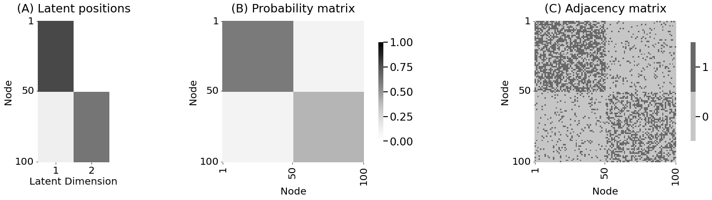 </center> --- ### ASE Example - True vs Estimated Probability Matrices <center> 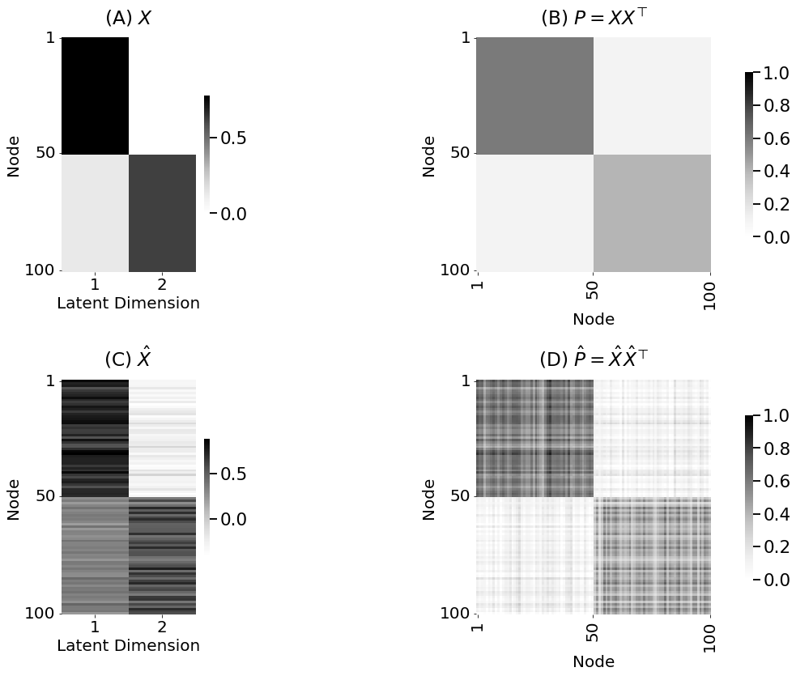 </center> --- ### ASE Example - Estimated Latent Positions <center> 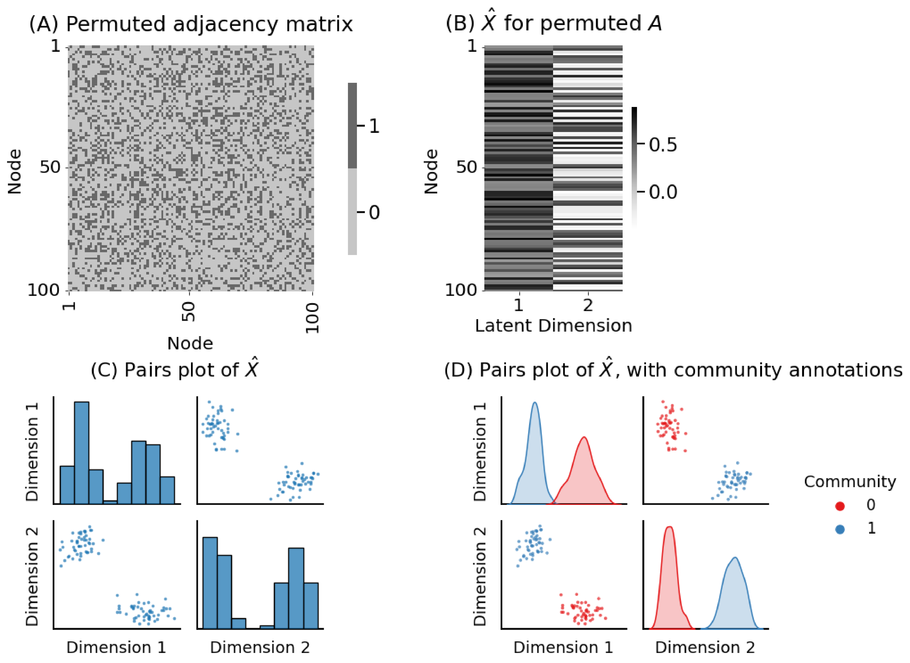 </center> --- ### Visualization of Rotational Non-identifiability <br> <center> 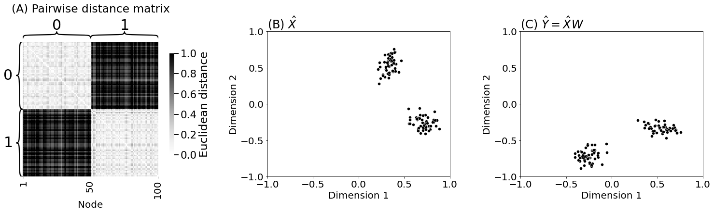 </center> --- ### Why use $\texttt{ase}$ at all? 1. $\texttt{ase}$ tabularizes your adjacency matrix - a.k.a latent positions - $n\times d$ real matrix, where $d$ was the number of dimensions that you selected to embed into -- 2. $\texttt{ase}$ decouples the dependencies of the random network - Want to study $P$ which encodes structure of networks - Let's study $X$ latent positions, which also encodes same structure -- 3. If we assume $A$ is a random variable, - theoretical results $\implies$ as our networks get larger (more data), our estimates of $P$ get better - $\hat X$ is a useful surrogate for studying $X$ - can be useful even under model misspecification --- name:lse ### Outline - [Basics of Graph Data](#graphs) - [Random Graph Models](#models) - Estimating Parameters for Networks - [Network Representations](#est) - [Adjacency Spectral Embedding](#ase) - Laplacian Spectral Embedding - [Applications](#apps) ### [Additional Content](#extra) --- ### Laplacian Spectral Embedding (LSE) - Remember the [network Laplacian](#dad_lapl) is $L = D^{-\\frac{1}{2}} A D^{-\\frac{1}{2}}$ -- - .ye[Laplacian spectral embedding] is applying $\texttt{svd}$ to $L$ - keep $d$ number of singular values/vectors: $$L = XX^\\top, X = U_d \\sqrt{\\Sigma_d}$$ - Here, $X$ is the .ye[latent positions of the network Laplacian] -- - Conceptually, think of it as $\texttt{ase}(L)$ --- ### ASE vs LSE <center> 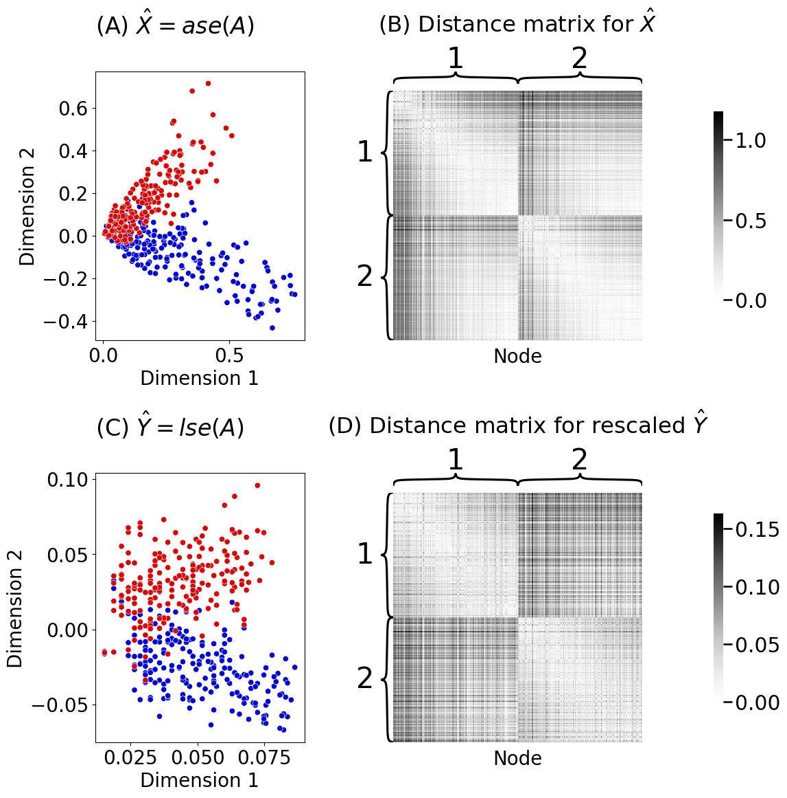 </center> -- - $\texttt{lse}$ preserves within-community structure with degree-corrections --- name:apps ### Outline - [Basics of Graph Data](#graphs) - [Random Graph Models](#models) - [Estimating Parameters for Networks](#est) - Applications - [Community Detection](#comm) - [Two-Sample Hypothesis Testing](#2samp) ### [Additional Content](#extra) --- name:comm ### Outline - [Basics of Graph Data](#graphs) - [Random Graph Models](#models) - [Estimating Parameters for Networks](#est) - Applications - Community Detection - [Two-Sample Hypothesis Testing](#2samp) ### [Additional Content](#extra) --- ### What is community detection? - Goal: find groups of nodes that are "similar" to each other than to all other nodes. - Note: community means same thing as clusters -- ##### Procedure for spectral clustering 1. Learn representations of your network - Embed using $\texttt{ase}$ or $\texttt{lse}$ in $d$ dimensions -- 2. Cluster the representations - e.g. k-means -- 3. Analyze the clusters --- ### Example - Sampling from DCSBM - Consider a DCSBM$_n$ with $n = 300$ nodes and $K = 3$ communities. - Randomly shuffle the ordering of nodes. <center> 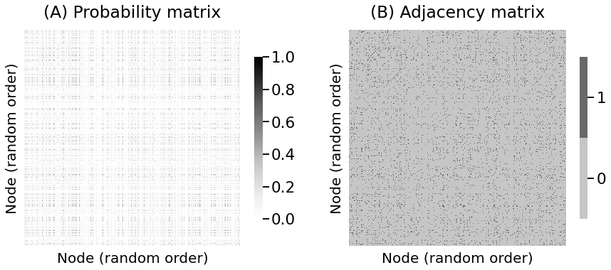 </center> -- - Can you find the communities? --- ### Example - Latent Positions from $\texttt{ase}$ - Estimate latent positions $\hat X$ from $\texttt{ase}$ of sampled adjacency matrix - Label latent positions by apriori known communities <center> 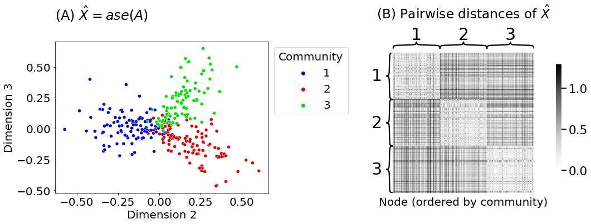 </center> -- - $\hat X$ retains the community structure --- ### Clustering with Unknown Number of Communities - In real data, number of communities are not obvious. - How do we find "optimal" number of communities? -- ##### Procedure 1. Learn representations of your network - Embed using $\texttt{ase}$ or $\texttt{lse}$ in $d$ dimensions -- 2. For $k\in\{2, 3, \ldots, K\}$ number of communities 1. Cluster the representations into $k$ communities 2. Compute silhouette score -- 3. Choose $k$ that has the highest silhouette score --- ### Example <center> 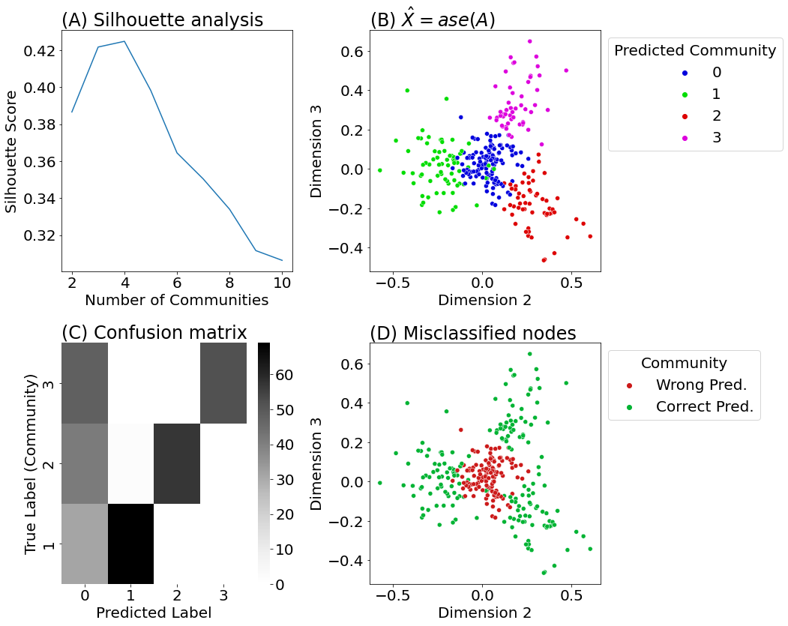 </center> --- ### Other Practical Considerations - Choice of embedding dimension $d$ - Different $d$ can give different clustering results -- - Choice of clustering algorithm - Gaussian mixture models ($\texttt{gmm}$) can give better results --- ### [Two-Truths of Spectral Clustering](https://doi.org/10.1073/pnas.1814462116) - Averaged from 100s human brain networks - Embed using $\texttt{ase}$ or $\texttt{lse}$ - Cluster using $\texttt{gmm}$ --- ### [Two-Truths of Spectral Clustering](https://doi.org/10.1073/pnas.1814462116) <center> 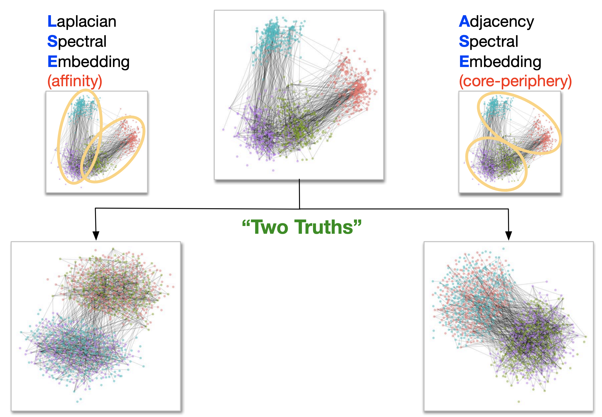 </center> | Clusters | $\texttt{gmm}$ o $\texttt{ase}$ | $\texttt{gmm}$ o $\texttt{lse}$| | ---| --- | --- | | 1 | <span style="color:#00bfc4"> right GM </span>, <span style="color:#f8766d"> left GM </span> | <span style="color:#00bfc4"> right GM </span>,<span style="color:#c77cff"> right WM </span> | | 2 | <span style="color:#c77cff"> right WM </span> , <span style="color:#7cae00"> left WM </span> | <span style="color:#f8766d"> left GM </span>, <span style="color:#7cae00"> left WM </span> | - WM = white matter; dense connections - GM = gray matter; sparse connections --- name:2samp ### Outline - [Basics of Graph Data](#graphs) - [Random Graph Models](#models) - [Estimating Parameters for Networks](#est) - Applications - [Community Detection](#comm) - Two-Sample Hypothesis Testing ### [Additional Content](#extra) --- ### What is two-sample hypothesis testing? - Given two networks: - Are they the "same"? (null hypothesis $H_0$) - Are they "different"? (alternate hypothesis $H_A$) -- - Assumptions - Same number of nodes in both networks - One-to-one correspondence of nodes between both network --- ### What specific tests under SBMs? - Assume our data comes from SBMs (model assumption) - We want to test $$\being{aligned} H_0&: B^{(1)} = B^{(2)} \\ H_A&: B^{(1)} \neq B^{(2)}\end{aligned}$$ --- ### Example - Traffic Patterns <center> 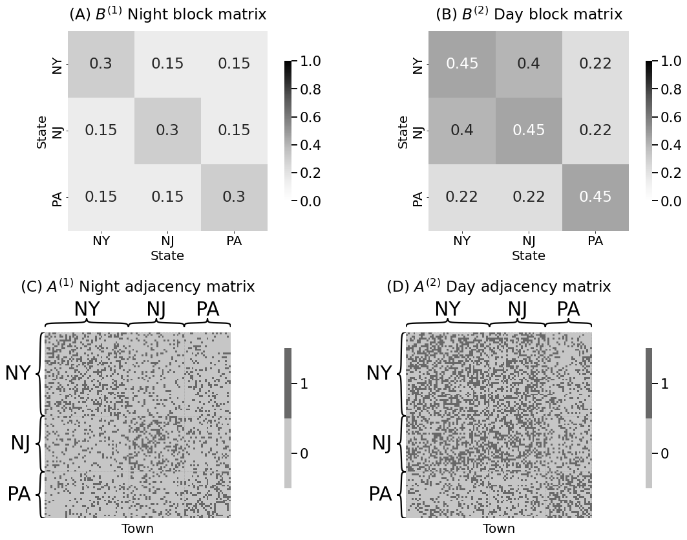 </center> --- ### Example - Traffic Patterns <center> 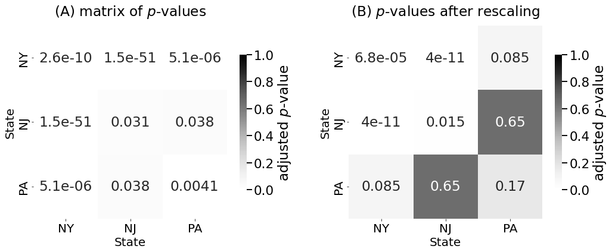 </center> --- ### Multiple Comparisons Problem <center> 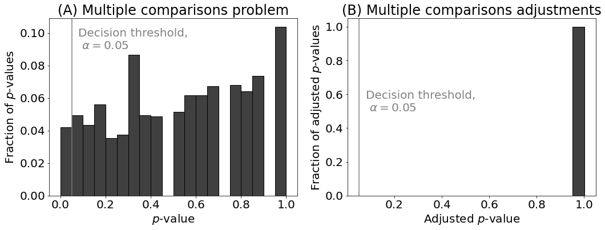 </center> --- ### Other interesting tests? 1. Are the latent positions from two networks different? $$H_0: X = YW ;\ H_A: X \neq YW$$ 2. Are the _distributions_ of latent positions from two networks different? $$H_0: F_X = F_Y ;\ H_A: F_X \neq F_YW$$ 3. Which latent positions are different from two networks? $$H_0: X_i = Y_iW ;\ H_A: X_i \neq Y_iW$$ --- name:extra ### Outline - [Basics of Graph Data](#graphs) - [Random Graph Models](#models) - [Estimating Parameters for Networks](#est) - [Applications](#apps) - [Community Detection](#comm) - [Two-Sample Hypothesis Testing](#2samp) ### Additional Content ---